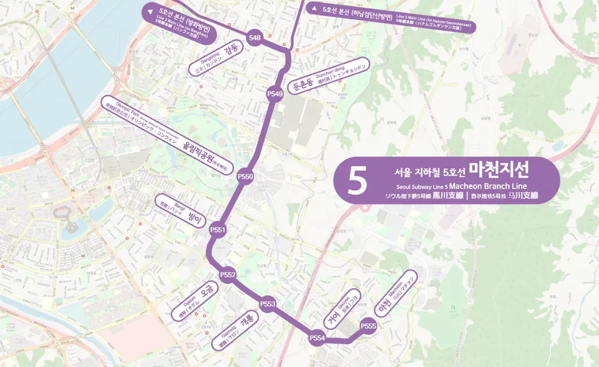
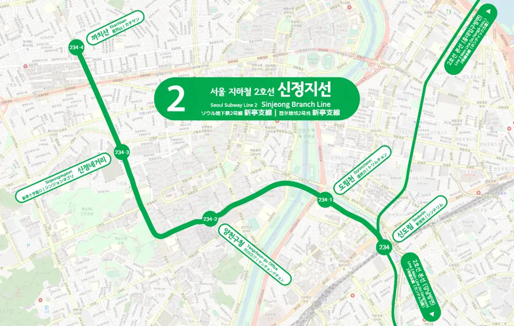
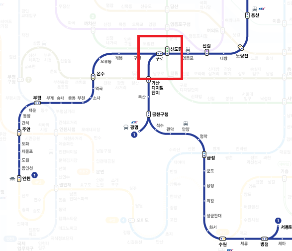

심판의 강동역
미리 대비하지 않고 폰만 들여다보고 있으면
마천으로 갈지 미사로 갈지 랜덤하게 심판당함
 
통곡의 신도림역
오 사람 없네 앉아서 갈 수 있겠다 개꿀하고 막 타게되면
눈물 흘리며 까치산 유배당함
다른 지선 대비 신정지선은 배차 간격도 김
징벌의 구로역
종착지 똑바로 확인 안한 죄로 랜덤하게 인천 또는 천안으로 보내버림
천안아산행 징벌 당하면 금천구청/병점에서 또 랜덤하게 광명 서동탄행이 결정됨
ㅊㅊ - 디시
구로가 진짜 씹악질련임 서울 토박이인데 구로만 가면 정신 바짝차려야함
겨울철에 술 먹고 앉아서 졸잖아? 그러면 넌 평택,아산,온양온천 셋 중 하나임